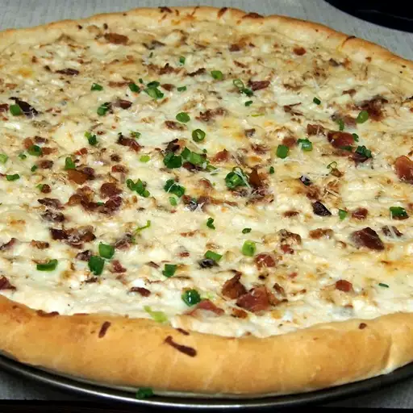
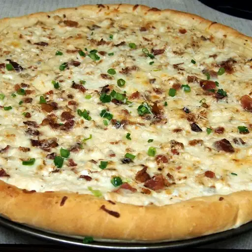

Garlic Butter
- butter: 2 tablespoons
- garlic (minced): 1 clove
- dried rosemary: 1 pinch
- salt: 1 pinch
 

This Alfredo pizza recipe combines two of my favorites: chicken and pizza. My husband, who isn't fond of chicken, even likes this!
Making homemade lasagna much easier than it looks. You'll find the full, step-by-step recipe below — but here's a brief overview of what you can expect: